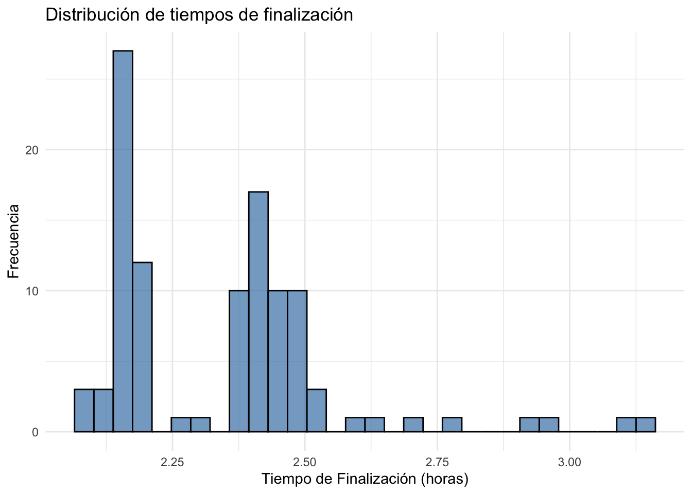
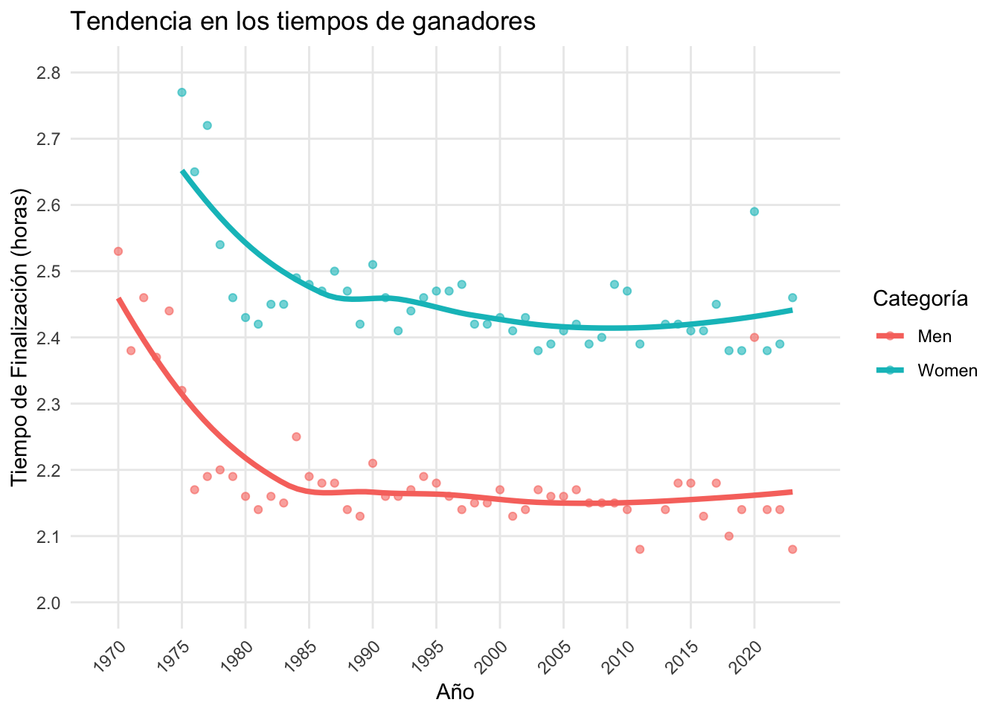
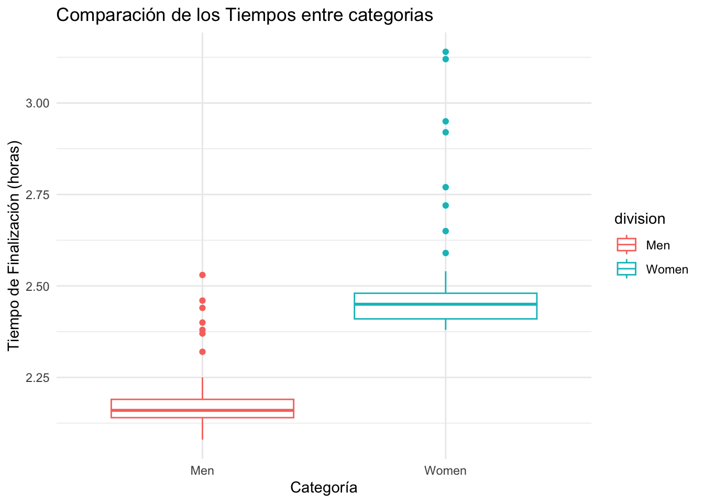
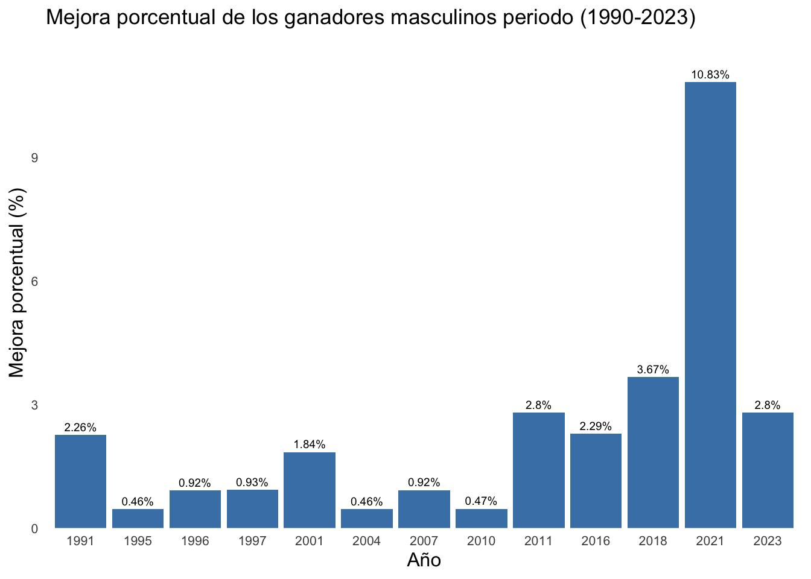
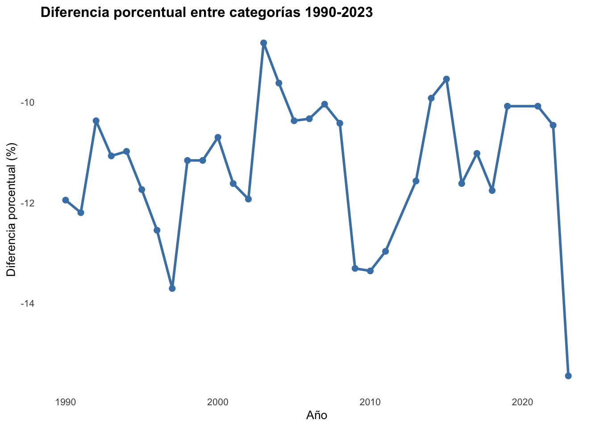

# A tibble: 12 × 7
year name country time time_hrs division note
<dbl> <chr> <chr> <time> <dbl> <chr> <chr>
1 2002 Rodgers Rop Kenya 02:08:07 2.14 Men <NA>
2 1994 Germn Silva Mexico 02:11:21 2.19 Men <NA>
3 2021 Albert Korir Kenya 02:08:22 2.14 Men <NA>
4 1992 Willie Mtolo South Africa 02:09:29 2.16 Men <NA>
5 2002 Joyce Chepchumba Kenya 02:25:56 2.43 Women <NA>
6 1985 Grete Waitz Norway 02:28:34 2.48 Women Seventh vi…
7 1995 Tegla Loroupe Kenya 02:28:06 2.47 Women Second vic…
8 2005 Paul Tergat Kenya 02:09:30 2.16 Men <NA>
9 2003 Martin Lel Kenya 02:10:30 2.17 Men <NA>
10 1980 Alberto Salazar United States 02:09:41 2.16 Men Course rec…
11 1991 Liz McColgan United Kingdom 02:27:32 2.46 Women <NA>
12 2021 Peres Jepchirchir Kenya 02:22:39 2.38 Women <NA> Análisis del Maratón de Nueva York
Introducción
En esta evaluación, aplicando los contenidos impartidos durante las últimas semanas del curso, realizaremos una exploración y análisis del conjunto de datos del Maratón de Nueva York, proporcionado por OpenIntro.
Analizaremos las variables de edad, tiempo de llegada en minutos, tiempo de llegada en minutos, país y el nombre, para poder identificar claramente a los corredores más destacados.
1. Importamos los datos
Para importar los datos, utilizaremos la información disponible en OpenIntro suministrada por el profesor. El conjunto de datos nyc_marathon, disponible en OpenIntro.
El conjunto de datos se puede importar de manera manual, aunque para efectos prácticos lo haremos de manera automatizada utilizando el paquete de OpenIntro presente en R. Para hacerlo, debemos cargar el paquete Library(OpenIntro) .
1.1 Carga del conjunto de datos y visualización de tabla
1.2 Creamos una tabla interactiva para realizar los primeros análisis
Respecto a los primeros análisis, viendo a profundidad, encontramos que de toda la data, existen tres años donde no hay variables, puesto que en 1970 no participaron mujeres y en el año 2012, no se celebró el maratón.
2. Valores Estadísticos y Tablas Resúmenes
La manera más eficiente para comprender un conjunto de datos, en este caso el de Maratón de Nueva York, es calculando las medidas de tendencia central y dispersión entre las variables. En este caso, la variable será (time_hrs).
Se realizó un análisis de las variables categóricas como el país y la categoría (femenina y masculina).
year name country time
Min. :1970 Length:108 Length:108 Min. :02:04:58.000000
1st Qu.:1983 Class :character Class :character 1st Qu.:02:09:41.000000
Median :1996 Mode :character Mode :character Median :02:22:54.000000
Mean :1996 Mean :02:20:43.533333
3rd Qu.:2010 3rd Qu.:02:27:14.000000
Max. :2023 Max. :03:08:41.000000
NA's :3
time_hrs division note
Min. :2.080 Length:108 Length:108
1st Qu.:2.160 Class :character Class :character
Median :2.380 Mode :character Mode :character
Mean :2.345
3rd Qu.:2.450
Max. :3.140
NA's :3 En primer lugar, el tiempo promedio de finalización de los corredores del maratón que triunfan es aproximadamente de 2.34 horas. Este valor indica el rendimiento general esperado de los corredores que ganan esta competencia. Respecto a la mediana, se encuentra cerca de la media, lo que nos sugiere una distribución simétrica del tiempo de finalización de la carrera.
En cuanto a la desviación estándar, es bastante baja y gira en torno a 0.1 horas. Esto quiere decir que todos los tiempos de los ganadores de la competencia varían poco con respecto a la media.
Respecto a los valores mínimos y máximos, se encuentran entre 2.1 y 2.7 horas, respectivamente. La diferencia de 0.6 entre valores, diferencia a los corredores profesionales más destacados, influenciados por tecnología, condiciones climatológicas y otras variables referentes a este tipo de competencias como el descanso, factores psicológicos e inclusive, lesiones musculares.
2.1 Distribución de los ganadores por categoría
Con respecto a los ganadores, se pueden mencionar dos grandes rasgos distintos. El número de corredores en la categoría hombres y mujeres.
Esta diferencia durante las últimas décadas, se ha disminuído tras la eliminación de barreras de sexo y posteriormente, patrocinio de marcas hacia mujeres corredoras, factores que en el largo plazo, contribuyen a una disminución de los tiempos mínimos y máximos entre las categorias hombres y mujeres.
Por otra parte, los tiempos promedio si presentan una gran diferencia. Esto se debe a que, en deportes de resistencia, los participantes hombres suelen registrar tiempos menores a los de las mujeres, particularidad que también se ha ido reduciendo con el paso del tiempo.
2.2. Tabla Resumen de Ganadores por País
Si queremos observar la categoría país más de cerca, veremos que países del continente africano han aumentado su cantidad de corredores ganadores. Esto corresponde a una generación completa de atletas de Kenia y Etiopía que desde hace al menos una década, dominan las competencias a nivel internacional, no solamente el Maraton de Nueva York.
Igualmente, destacan países como Noruega, gracias a sus métodos de entrenamiento y condiciones climatológicas favorecedoras a la hora de realizar entrenamientos.
3. Análisis Exploratorio de los Datos (EDA)
Ahora realizaremos un análisis visual utilizando gráficos para explorar la relación entre las variables. Por ejemplo, podemos graficar la evolución de los tiempos de los ganadores a lo largo de los años y observar cómo ha cambiado el rendimiento de los corredores.
Gráfico 1: ¿Que distribución siguen los tiempos finales en el Maratón de Nueva York?

El histograma muestra una distribución ligeramente sesgada hacia la derecha, lo que indica que la mayoría de los ganadores terminan con tiempos concentrados en un rango bajo (más rápido), pero hay una cola hacia tiempos más lentos.
Esto es típico en competencias de élite donde la mayoría de los corredores tiene rendimientos similares, pero algunos años o casos especiales presentan tiempos más altos. También, otra explicación es que, los tiempos que se acercan hacia la derecha corresponden a las primeras ediciones celebradas de la competencia.
Este cesgo indica unos pocos tiempos ganadores notablemente más lentos. Estos podrían representar años con condiciones adversas o circunstancias especiales, como mal tiempo o rutas más difíciles. No se aprecian tiempos extremadamente rápidos fuera de la concentración principal, lo que sugiere que no hay valores atípicos hacia la izquierda.
Gráfico 2: Evolución de los tiempos de los ganadores a lo largo de los años
Este gráfico permite observar una clara mejora histórica en los tiempos de los ganadores del Maratón de Nueva York, tanto para hombres como para mujeres, con una brecha persistente pero relativamente constante entre las categorías. La reducción de la dispersión en las últimas décadas indica una élite cada vez más homogénea en cuanto a rendimiento. Las variaciones en la curva suavizada aportan contexto sobre la influencia de factores externos en diferentes épocas, el más destacado es la tecnología. Puesto que durante los últimos 10 años, los tiempos, particularmente en la categoría de hombres, se han reducido casi año tras año.

Gráfico 3: Comparación de los tiempos entre hombres y mujeres

El gráfico de cajas evidencia que los ganadores masculinos tienden a tener tiempos más rápidos y consistentes que las ganadoras femeninas en el Maratón de Nueva York. La diferencia en medianas y dispersión es esperada y refleja diferencias fisiológicas naturales y la dinámica competitiva entre categorías. Este tipo de visualización es útil para resumir y comparar distribuciones completas de datos y destacar diferencias centrales y de variabilidad entre grupos.
Aplicamos mutates (Derivación o agregación de datos)
A manera de práctica, crearemos una variable y además modificaremos la información previamente mostrada para poder analizar cómo ha mejorado el atletismo en los últimos años,
Análisis y resumen del gráfico de mejoras porcentuales (1990–2023) — Categoría masculina
El análisis de las mejoras porcentuales positivas desde 1990 hasta 2023 revela un progreso consistente y variable en los tiempos ganadores masculinos del Maratón de Nueva York. Estas tendencias reflejan la evolución y la dinámica del deporte, donde pequeñas mejoras anuales suman para alcanzar niveles de rendimiento cada vez más altos. Este enfoque permite destacar los años clave de progreso y aporta una perspectiva clara sobre cómo ha avanzado la élite del maratón en las últimas tres décadas.

Diferencia porcentual entre las categorías en el periodo 1990-2023
El gráfico muestra una brecha estable y pequeña en los tiempos ganadores masculinos y femeninos del Maratón de Nueva York durante más de 30 años. La constancia de esta diferencia porcentual indica que, pese a la mejora continua en ambos sexos, la proporción relativa entre sus rendimientos se mantiene constante, reflejando tanto diferencias fisiológicas como una evolución paralela en el atletismo élite.

En el gráfico anterior podemos observar que pese al avance de la categoría femenina con mayor número de participantes anualmente e inclusive mejoras tecnológicas, características biológicas y fisiológicas continuan influyendo en la brecha temporal entre categorias.